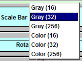

3D RenderingTo go to the 3D mode, check "3D". The rendered image will be similar to linearly interporated 2D data. The default settings are displayed on the right. |
Original |
3D Rendering |
Gray ScaleYou can display the data in three gray scales. There are 16 levels in Gray (16), 32 levels in Gray (32), and 256 levels in Gray (256). To select one of them, click "Scale Bar" and pick your choice. |
Gray (16) Gray (256) |
Gray (32) Scale Bar  |
Color ScaleYou can display the data in three color scales. There are 16 levels in Color (16), 32 levels in Color (32), and 256 levels in Color (256). To select one of them, click "Scale Bar" and pick your choice. |
Color (16) Color (256) |
Color (32) |
Z ScaleTo change the scale in the Z axis, adjust the "Z Scale" slide. |
Original |
Z Scale Changed to 3.26 |
Rotation around The X AxisTo rotate the data aroung the x axis, adjust "x" slider in the rotation panel. |
Original |
X-axis Rotation: -34 |
Rotation around The Z AxisTo rotate the data around the z axis, adjust "z" slider in the "Rotation" panel. |
X-axis Rotation: -34; Z-axis Rotation: 0 |
X-axis Rotation: -34; Z-axis Rotation: 30 |
Translation along The Y AxisTo translate the data along the y axis, adjust "y" slider in the "Translation" panel. |
X-axis Rotation: -34; Z-axis Rotation: 30 Y-axis Translation: 0 |
X-axis Rotation: -34; Z-axis Rotation: 30 Y-axis Translation: -20 |
ZoomTo change the zoom, adjust "Zoom" slider. |
X-axis Rotation: -54; Z-axis Rotation: 30 X-axis Translation: -7; Y-axis Translation: -20 Zoom: 1.00 |
X-axis Rotation: -54; Z-axis Rotation: 30 X-axis Translation: -7; Y-axis Translation: -20 Zoom: 1.25 |
Mesh RenderingThe default rendering mode in 3D is surface rendering. To change it to the mesh rendering mode, check "Lines". The mesh displayed on the right is rendered by quads. To change the elements to triangles, check "Triangle" in the 2D panel. |
Surface Rendering |
Mesh Rendering |
OriginalYou can switch to the data rendering without rotation, translation, and zoom by checking "Original". To go back to the rendering with rotation, translation, and zoom, uncheck the "Original" button. |
||
Movie of The Steps
|
Video
|
|
Movie of Two bAPsThis is a movie displaying calcium imaging signals evoked by two bAPs. |
Video
|